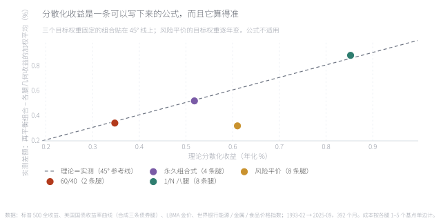
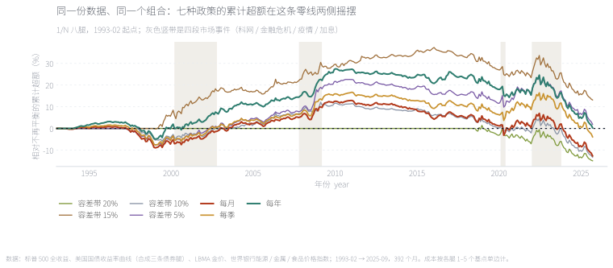
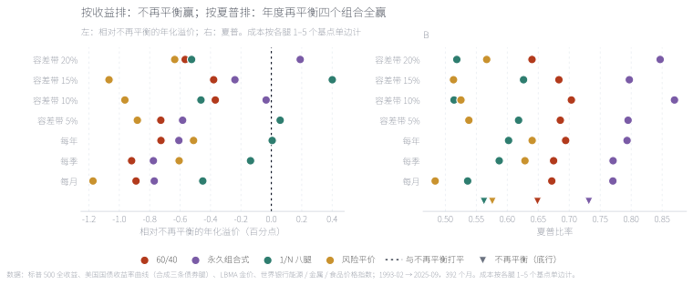
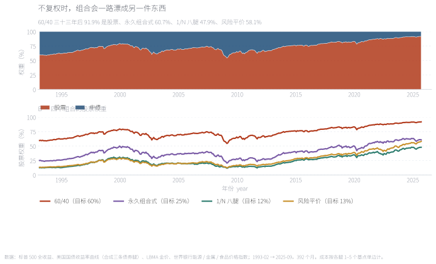
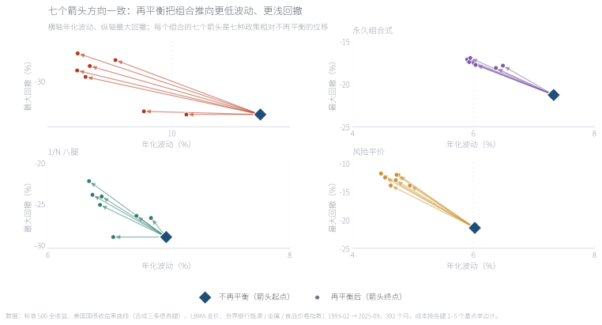
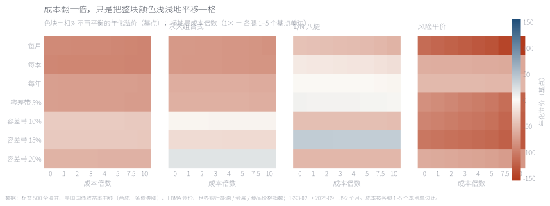
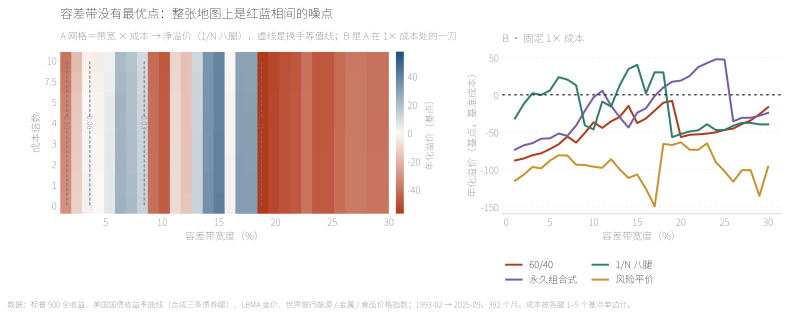
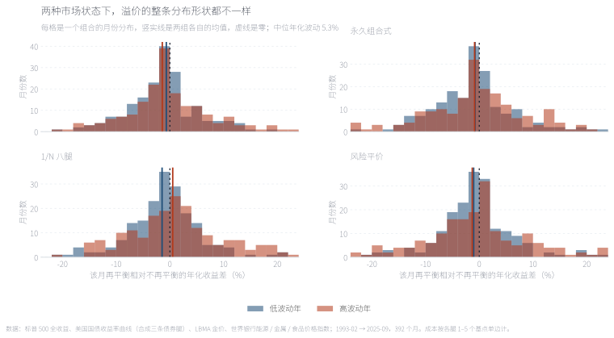
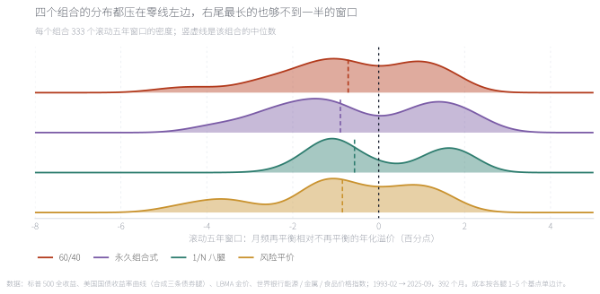

「再平衡能提高长期收益」是一句被说了五十年的话。它一半对、一半错，而两半都能在同一份数据里量出来。对的那一半：再平衡确实多赚了一笔「分散化收益」，而且 Booth–Fama 那个公式几乎分毫不差——本文实测 60/40 是 +0.33 个百分点、永久组合式 +0.51、1/N 八腿 +0.88，公式预测的是 0.35 / 0.52 / 0.85。错的那一半：同一份数据里，不再平衡比月频再平衡的年化高出 0.45 到 1.17 个百分点——因为不复权时权重会漂到最赚钱的那条腿上，60/40 三十年后 91.9% 是股票。而按夏普排，年度再平衡在四个组合里全部胜出。 "Rebalancing improves long-run returns" has been repeated for fifty years. It is half right and half wrong, and both halves can be measured in the same dataset. The right half: rebalancing really does earn a diversification return, and the Booth–Fama formula nails it — this note measures +0.33 points for a 60/40, +0.51 for a four-way split and +0.88 for 1/N across eight legs, against formula predictions of 0.35 / 0.52 / 0.85. The wrong half: over the same data, buy-and-hold beats monthly rebalancing by 0.45 to 1.17 points a year, because an untouched portfolio drifts into whatever worked — a 60/40 ends the sample 91.9% equities. And ranked by Sharpe ratio, annual rebalancing wins in all four portfolios.
摘要本文把「再平衡能提高长期收益」拆成两个可以分别检验的命题。样本是 1993-02 至 2025-09 共 392 个月的美国月度数据，与站上其他笔记共用同一份公开数据管线（8 条资产腿：股票、长债、中债、短债、黄金、能源、金属、食品）。四个目标组合覆盖 2 / 4 / 8 / 8 条腿（60/40、永久组合式、1/N 八腿、风险平价），八种再平衡政策覆盖不再平衡、月频、季频、年频与 5%/10%/15%/20% 容差带。结论三层：①分散化收益客观存在且与 Booth–Fama / Willenbrock 的公式吻合，随腿数上升（0.33 → 0.88 个百分点）；②它在方向上支持再平衡，但幅度远小于「不再平衡吃到的权重漂移」，因此按收益排不再平衡在四类组合里全部胜出（+0.45 至 +1.17 个百分点）；③把风险放进来，排序反转——年度再平衡在四个组合里的夏普都最高，且成本从 1 倍放大到 10 倍只能解释其中很小一部分。边界样本是 1993–2025 的美国资产，恰好是股票与债券的长牛；只有 8 条腿、只做多、不加杠杆；成本按各腿 1–5 个基点单边计，不含税费；容差带只在月末检查一次，不模拟盘中的日度触发。
AbstractThis note splits "rebalancing improves long-run returns" into two separately testable claims. The sample is 392 monthly US observations from February 1993 to September 2025, sharing the public data pipeline used elsewhere on this site (eight asset legs: equities, long, intermediate and short Treasuries, gold, energy, metals and food). Four target portfolios span two, four, eight and eight legs (a 60/40, a four-way split, 1/N across eight legs, and risk parity), and eight policies span buy-and-hold, monthly, quarterly, annual and 5/10/15/20% tolerance bands. Three layers of conclusion. First, the diversification return is real and matches the Booth–Fama / Willenbrock formula, rising with the number of legs (0.33% to 0.88% a year). Second, while that supports rebalancing in direction, it is much smaller than the weight drift that buy-and-hold captures — so on return, buy-and-hold wins in all four portfolios by 0.45 to 1.17 points. Third, once risk is included the ordering reverses: annual rebalancing has the highest Sharpe in every portfolio, and scaling costs tenfold explains only a small part of the difference. Limits: the sample is US assets over 1993–2025, a secular bull market in both equities and bonds; eight legs only, long-only and unlevered; costs at one to five basis points per leg, excluding taxes; and bands are checked once a month rather than intraday.
关键词 再平衡 · 分散化收益 · 容差带 · 恒定混合 · 权重漂移 · 交易成本Keywords rebalancing · diversification return · tolerance band · constant mix · weight drift · transaction costs
「再平衡」在流行的写法里同时承担了三件事，而它们其实是三个不同的命题：（一）把风险控制住——让组合不要慢慢变成另一件东西；（二）低买高卖——跌下去的买回来、涨上去的卖掉一些；（三）提高长期收益——因为低买高卖，长期应该赚得更多。
In popular writing "rebalancing" carries three jobs at once, and they are three different propositions: (1) keep risk under control, so the portfolio does not slowly become something else; (2) sell high and buy low — top up what fell, trim what ran; and (3) improve long-run return, because selling high and buying low should pay over time.
第三句最常被引用，也最经不起检验。原因在 1988 年就被 Perold 与 Sharpe 说清楚了：再平衡在数学上等价于「恒定混合」（constant mix）策略，而恒定混合是一张空头期权——市场越震荡它赚得越多，市场越单边它输得越多。买入持有则是另一个极端。所以「再平衡能不能提高收益」这个问法本身就不完整：它取决于这段时间的市场是震荡的，还是单边的。
The third claim is the most quoted and the least robust. Perold and Sharpe settled why in 1988: rebalancing is mathematically a constant-mix strategy, and constant mix is a short option — it earns more the more the market oscillates, and pays more the more it trends. Buy-and-hold is the opposite pole. So "does rebalancing improve returns" is an incomplete question: the answer depends on whether the period oscillated or trended.
还有一层更少被提到：「再平衡的收益」在文献里有一个精确的定义，它不是「比不再平衡多赚多少」。Booth 与 Fama 在 1992 年、Willenbrock 在 2011 年给出的写法是——再平衡组合的几何收益 ≈ 各条腿几何收益的加权平均 + ½(Σwᵢσᵢ² − σ_P²)。右边第二项叫分散化收益，它是一条公式。本文的第一件事就是把这条公式和数据对上。
There is a subtler point that gets mentioned less: in the literature, "the return from rebalancing" has a precise definition, and it is not "how much more than buy-and-hold you made." Booth and Fama in 1992, and Willenbrock in 2011, wrote it as: the geometric return of a rebalanced portfolio ≈ the weighted average of the legs' geometric returns + ½(Σwᵢσᵢ² − σ_P²). The second term is the diversification return, and it is a formula. The first thing this note does is check that formula against the data.
样本与站上其他笔记共用同一份公开数据管线：8 条资产腿——股票（标普 500 全收益）、长债（30 年期国债收益率合成，久期 15）、中债（10 年期，久期 7.5）、短债（2 年期，久期 1.9）、黄金（LBMA 金价）、能源 / 金属 / 食品（世界银行 Pink Sheet）。数据从 1990-02 到 2025-09，前 36 个月留给风险平价的第一次估计，样本外从 1993-02 起共 392 个月（32.7 年）。
The sample shares the public data pipeline used by the other notes: eight asset legs — equities (S&P 500 total return), long bonds (30-year Treasury yield, duration 15), 10-year (7.5) and 2-year (1.9) Treasuries, gold (LBMA fix) and energy / metals / food (World Bank Pink Sheet). The data run from February 1990 to September 2025, with the first 36 months reserved for risk parity's first estimate, leaving 392 out-of-sample months (32.7 years) from February 1993.
四个目标组合只在腿数与腿的性质上不同——这是本文最要紧的设计：如果分散化收益真的等于 ½(Σwᵢσᵢ² − σ_P²)，那它应该随腿数系统性上升。
The four target portfolios differ only in how many legs they hold and what those legs are — the load-bearing design choice here: if the diversification return really equals ½(Σwᵢσᵢ² − σ_P²), it should rise systematically with the number of legs.
| 目标组合Target portfolio | 腿数Legs | 定义Definition | 目标权重Target weights |
|---|---|---|---|
| 60/4060/40 | 2 | 股票 60% + 中债 40%60% equities + 40% 10-year bonds | 股票 60.0%，中债 40.0%Equities 60.0%, 10-year bonds 40.0% |
| 永久组合式Four-way split | 4 | 股票 / 长债 / 黄金 / 短债 各 25%25% each in equities, long bonds, gold, short bonds | 股票 25.0%，长债 25.0%，短债 25.0%，黄金 25.0%Equities 25.0%, Long bonds 25.0%, 2-year bonds 25.0%, Gold 25.0% |
| 1/N 八腿1/N, eight legs | 8 | 八条腿各 12.5%，不估任何参数One eighth in each of the eight legs, no parameters | 股票 12.5%，长债 12.5%，中债 12.5%，短债 12.5%，黄金 12.5%，能源 12.5%，金属 12.5%，食品 12.5%Equities 12.5%, Long bonds 12.5%, 10-year bonds 12.5%, 2-year bonds 12.5%, Gold 12.5%, Energy 12.5%, Metals 12.5%, Food 12.5% |
| 风险平价Risk parity, ERC | 8 | 等风险贡献，每年 1 月按最近 36 个月协方差重解Equal risk contribution, re-solved each January on the trailing 36 months | 股票 13.3%，长债 7.2%，中债 19.6%，短债 47.2%，能源 12.5%Equities 13.3%, Long bonds 7.2%, 10-year bonds 19.6%, 2-year bonds 47.2%, Energy 12.5% |
再平衡政策覆盖了从「完全不管」到「每月都管」的全部区间，其中容差带是机构里真正在用的那一类——不是按日历动手，而是偏离到某个程度才动手。
The policies span the full range from "never touch it" to "fix it every month." The tolerance bands are the ones institutions actually use: not a calendar rule, but a trigger at some degree of drift.
| 政策Policy | 触发规则Trigger |
|---|---|
| 不再平衡Never rebalance | 买完之后再也不动，权重随价格漂移Buy, then never touch it; weights drift with prices |
| 每月Monthly | 每个自然月末回到目标权重Back to target at every month end |
| 每季Quarterly | 每季末回到目标权重Back to target at every quarter end |
| 每年Annually | 每年 1 月回到目标权重Back to target each January |
| 容差带 5%5% tolerance band | 任一腿偏离目标超过 5 个百分点就整组回到目标Reset whenever any leg drifts more than 5 points from target |
| 容差带 10%10% tolerance band | 任一腿偏离目标超过 10 个百分点才动手Reset only when a leg drifts more than 10 points |
| 容差带 15%15% tolerance band | 任一腿偏离目标超过 15 个百分点才动手Reset only when a leg drifts more than 15 points |
| 容差带 20%20% tolerance band | 任一腿偏离目标超过 20 个百分点才动手Reset only when a leg drifts more than 20 points |
三个口径要写清楚。第一，成本按实际成交额扣：把权重变动的绝对值乘上每条腿的单边成本（股票与两条中长期债 2 个基点、短债 1 个、黄金 3 个、三条商品腿各 5 个），从当月收益里直接减掉。第二，容差带每个月末检查一次，任一腿偏离目标超过阈值就整组回到目标，不模拟盘中的日度触发（真实触发会更频繁）。第三，风险平价的目标权重每年 1 月重解，所以它的换手天然高于其他三个组合——这一点在后面的容差带分析里很关键。
Three conventions need stating. First, costs are charged on actual traded notional: the absolute weight change times each leg's one-way cost (two basis points for equities and the two longer bond legs, one for short bonds, three for gold and five for each of the three commodity legs), deducted from that month's return. Second, a band is checked once a month, and a breach resets the whole portfolio to target; intraday triggers are not simulated, so real trigger counts would be higher. Third, risk parity's target weights are re-solved each January, which makes its turnover structurally higher than the other three — a detail that matters later.
先不讨论政策，只做一个最干净的比较：把每个目标组合按月频、零成本再平衡，看它的几何收益比「各条腿几何收益的加权平均」高出多少，再和公式 ½(Σwᵢσᵢ² − σ_P²) 对照。
Forget policies for a moment and run the cleanest possible comparison: rebalance each target portfolio monthly at zero cost, measure how much its geometric return exceeds the weighted average of its legs' geometric returns, and set that against the formula ½(Σwᵢσᵢ² − σ_P²).

四条线各自从左边（公式算出来的）连到右边（数据里量出来的）。几乎全是水平线：60/40 预测 0.35、实测 0.33；永久组合式 0.52 对 0.51；1/N 八腿 0.85 对 0.88。唯一往下掉的是风险平价（0.61 → 0.31）——因为它的目标权重每年 1 月重解，公式里那个固定的 w 根本不存在，这条恒等式不适用于它。一个可以被证伪的预测没有被证伪，而它唯一的例外也解释清楚了。
Each line runs from the left (what the formula predicts) to the right (what the data measures). They are almost all flat: the 60/40 predicts 0.35 and measures 0.33, the four-way split 0.52 against 0.51, 1/N across eight legs 0.85 against 0.88. The only drop is risk parity (0.61 to 0.31) — its target weights are re-solved every January, so the formula's fixed w does not exist and the identity does not apply. A falsifiable prediction that was not falsified, with its one exception explained.
来源：本文回测；理论值用样本内的年化协方差矩阵与目标权重直接计算，实测值＝月频再平衡组合的年化几何收益 − 各腿年化几何收益的加权平均；均为零成本。Source: author's backtest. The theoretical value is computed directly from the in-sample annualised covariance matrix and the target weights; the realised value is the monthly-rebalanced geometric return minus the weighted average of the legs'. Both at zero cost.
| 目标组合Portfolio | 腿数Legs | 组合年化波动 %Portfolio vol % | 理论分散化收益 %Theoretical % | 实测 %Realised % | 不再平衡高出 %Buy-and-hold lead % |
|---|---|---|---|---|---|
| 60/4060/40 | 2 | 9.08 | 0.35 | 0.33 | 1.22 |
| 永久组合式Four-way split | 4 | 5.90 | 0.52 | 0.51 | 1.28 |
| 1/N 八腿1/N, eight legs | 8 | 6.43 | 0.85 | 0.88 | 1.32 |
| 风险平价Risk parity, ERC | 8 | 4.51 | 0.61 | 0.31 | 1.44 |
表 3 的最后两列已经把全文的张力摆出来了。分散化收益是正的，而且随腿数上升（0.33 → 0.51 → 0.88）——腿越多，再平衡"捡"到的钱越多。但同一张表里还有一列：不再平衡比它高出 1.22 到 1.32 个百分点，比分散化收益本身还大。也就是说：再平衡确实赚到了公式里那笔钱，但同时放弃了一笔更大的钱。下一节说清楚那笔钱是什么。
The last two columns of Table 3 already hold the tension of this note. The diversification return is positive and rises with the number of legs (0.33, 0.51, 0.88) — more legs means more money picked up by rebalancing. But the same table carries another column: buy-and-hold leads by 1.22 to 1.32 points, more than the diversification return itself. In other words, rebalancing does collect the formula's money — and gives up something larger. The next section says what.
分散化收益的基准是「各条腿的加权平均」——一个假想的、从不偏离目标的组合。而「不再平衡」不是这个组合：它的权重会随价格漂移，一路漂到表现最好的那条腿上。所以两句话都对，只是它们比的是不同的东西。
The diversification return is measured against the weighted average of the legs — a hypothetical portfolio that never drifts. Buy-and-hold is not that portfolio: its weights drift with prices, all the way into whatever performed best. Both statements are true; they are benchmarked against different things.

这张图画的不是净值，是相对不再平衡的累计超额——原来八条挤在一起的对数净值线，换成超额之后差距放大了十倍，零线就是「和不再平衡打平」。四段灰色竖带是市场事件：科网泡沫破裂、全球金融危机、疫情冲击、2022 年之后的快速加息。读法变得很直接：七条线在三十三年里反复穿过零线，2010 年之前多数在零线下方，之后被甩得更开；只有 2000–2002 与 2008 两段，再平衡明显跑到零线上方——正好是两段震荡最剧烈的时期。
What is plotted is not net value but cumulative excess over buy-and-hold — recasting the eight overlapping log-scale lines as excess magnifies the gap tenfold, and the zero line means "level with buy-and-hold." The four grey bands are market events: the dot-com bust, the global financial crisis, the pandemic shock and the post-2022 hiking cycle. Reading becomes direct: the seven lines cross zero repeatedly, sitting mostly below it before 2010 and falling further behind after; only in 2000–2002 and 2008 do they clearly rise above zero — precisely the two most volatile stretches.
来源：本文回测；零成本，月频再平衡与各容差带均按表 2 的触发规则；终点倍数标注在图例中。Source: author's backtest, zero cost, with monthly rebalancing and the bands following the triggers in Table 2; terminal multiples are shown in the legend.
把八条线换成四个组合 × 七种政策的点阵，结论更清楚。
Replace the eight lines with a dot plot of four portfolios against seven policies and the picture sharpens.

这是平行坐标：每个组合一格，四条竖轴分别是年化溢价、夏普、年化波动、最大回撤，各自归一化到 0–1 并把波动与回撤翻转，所以越靠上越好。深蓝虚线是不再平衡、绿色实线是年度再平衡。看一个组合不够，要看四格：在四个组合里，绿色线在夏普、波动、回撤三条轴上都在最上端，只在「年化溢价」那条轴上贴着底部——这就是全文那句话的图形版本：再平衡买的是风险，不是收益。
This is a parallel-coordinates chart: one panel per portfolio, four vertical axes for annualised premium, Sharpe, volatility and drawdown, each normalised to 0–1 with volatility and drawdown flipped so that higher is better. The dashed dark line is buy-and-hold, the solid green line is annual rebalancing. One panel is not enough; read all four: in every portfolio the green line sits at the very top on Sharpe, volatility and drawdown, and flat at the bottom on the premium axis — the graphic form of this note's sentence: rebalancing buys risk, not return.
来源：本文回测；成本按各腿 1–5 个基点单边计（不再平衡无交易成本）；左图的零线是「与不再平衡打平」。Source: author's backtest. Costs at one to five basis points per leg, one way; buy-and-hold incurs none. The zero line in the left panel is "level with buy-and-hold."
所以「再平衡提高长期收益」这句话错在哪里，现在可以说得很具体：它把「分散化收益」和「跑赢不再平衡」当成了同一件事。前者是真的、可算的、随腿数上升的；后者是另一个问题，而答案取决于这段历史里赢家有没有一直赢下去。
So where exactly is "rebalancing improves long-run returns" wrong? Precisely here: it treats "the diversification return" and "beating buy-and-hold" as the same thing. The first is real, computable and rises with the number of legs; the second is a different question, and its answer depends on whether the winners kept winning.
「不再平衡」到底买到了什么？答案不是别的，就是权重漂移。不加干预时，每条腿的权重按它自己的累计表现增长——涨得多的那条腿，权重越占越大。
What exactly does buy-and-hold buy? Not something exotic — weight drift. Left alone, each leg's weight grows with its own cumulative performance, so whatever rose the most ends up occupying the most.

上半幅是 60/40 在不复权下的完整权重结构（面积堆叠）：股票那一块从 60% 一路涨到 91.9%，中债被挤到不足一成。下半幅是四个组合的股票权重路径，虚线在各自的目标位置。风险平价从 13.3% 漂到 58.1%（偏离目标 44.8 个百分点），永久组合式 25% → 60.7%，1/N 八腿 12.5% → 47.9%。四个组合漂移的方向完全一致：都漂向股票，因为这段历史里股票赢了。不再平衡多赚的那 1.2 个百分点，买到的就是这个——一个每天都在更像股票组合的组合。
The upper panel is the 60/40's full weight structure under buy-and-hold (stacked area): the equity block grows from 60% to 91.9% while 10-year bonds are squeezed below a tenth. The lower panel tracks the equity weight for all four portfolios. Risk parity drifts from 13.3% to 58.1% (44.8 points off target), the four-way split from 25% to 60.7%, 1/N from 12.5% to 47.9%. The drift points the same way in every case — into equities, because equities won. That is what buy-and-hold's extra 1.2 points actually buys: a portfolio that becomes an equity portfolio, a little more every day.
来源：本文回测；权重按各腿月度收益逐月复利并重新归一化，不施加任何再平衡；股票权重＝股票腿权重。Source: author's backtest. Weights compound monthly with each leg's return and are renormalised with no rebalancing applied; the equity weight is the equity leg's share.
如果这个解释成立，那不再平衡应该同时承担更多风险。数据正是这样。
If that explanation holds, buy-and-hold should also be taking more risk. It is.

每格是一个组合：菱形是不再平衡的位置，七个箭头是七种再平衡政策把它推到的地方（横轴年化波动、纵轴最大回撤）。四个组合、二十八个箭头，方向高度一致——全部往左下走。60/40 从波动 10.95%、回撤 −33.3% 被推到 8.99% 与 −27.3%；风险平价从 6.02% / −21.4% 推到 4.54% / −12.5%。这张图把「再平衡买到什么」直接画成了位移向量：它买的不是收益，是把整个点往左下挪的那段距离。
Each panel is one portfolio: the diamond is buy-and-hold and the seven arrows show where the seven rebalancing policies push it (volatility on the horizontal, drawdown on the vertical). Four portfolios, twenty-eight arrows, all pointing the same way — down and to the left. The 60/40 moves from 10.95% volatility and −33.3% drawdown to 8.99% and −27.3%; risk parity from 6.02% / −21.4% to 4.54% / −12.5%. The chart turns "what rebalancing buys" into a displacement vector: not return, but the distance the whole point travels toward the lower left.
来源：本文回测；不再平衡为零成本，其余政策按各腿 1–5 个基点单边计；最大回撤按累计净值口径。Source: author's backtest. Buy-and-hold at zero cost, other policies at one to five basis points per leg; drawdowns measured on the cumulative value index.
| 目标组合Portfolio | 政策Policy | 年化 %Return % | 波动 %Vol % | 夏普Sharpe | 最大回撤 %Max DD % | 年换手Turnover | 相对不再平衡 ppvs buy-and-hold pp |
|---|---|---|---|---|---|---|---|
| 60/4060/40 | 不再平衡Buy and hold | 9.36 | 10.95 | 0.65 | -33.3 | 0.00 | — |
| 每月Monthly | 8.47 | 9.08 | 0.67 | -29.6 | 0.11 | -0.89 | |
| 每年Annually | 8.64 | 8.99 | 0.69 | -27.3 | 0.04 | -0.73 | |
| 容差带 10%10% tolerance band | 8.99 | 9.40 | 0.70 | -27.9 | 0.03 | -0.37 | |
| 永久组合式Four-way split | 不再平衡Buy and hold | 7.83 | 7.33 | 0.73 | -21.3 | 0.00 | — |
| 每月Monthly | 7.06 | 5.90 | 0.77 | -17.3 | 0.13 | -0.77 | |
| 每年Annually | 7.22 | 5.93 | 0.79 | -17.4 | 0.04 | -0.61 | |
| 容差带 10%10% tolerance band | 7.79 | 6.04 | 0.87 | -17.8 | 0.03 | -0.03 | |
| 1/N 八腿1/N, eight legs | 不再平衡Buy and hold | 6.34 | 6.98 | 0.56 | -29.0 | 0.00 | — |
| 每月Monthly | 5.88 | 6.43 | 0.54 | -25.1 | 0.16 | -0.45 | |
| 每年Annually | 6.34 | 6.45 | 0.60 | -24.1 | 0.06 | +0.01 | |
| 容差带 10%10% tolerance band | 5.87 | 6.73 | 0.51 | -26.5 | 0.02 | -0.46 | |
| 风险平价Risk parity, ERC | 不再平衡Buy and hold | 5.91 | 6.02 | 0.58 | -21.4 | 0.00 | — |
| 每月Monthly | 4.74 | 4.72 | 0.48 | -13.0 | 0.69 | -1.17 | |
| 每年Annually | 5.40 | 4.54 | 0.64 | -12.5 | 0.04 | -0.51 | |
| 容差带 10%10% tolerance band | 4.95 | 4.73 | 0.53 | -12.0 | 0.54 | -0.96 |
表 4 把三个代表性政策与不再平衡并排放。四个组合、四个指标，方向完全一致：不再平衡的年化最高、夏普最低（或次低）；年度再平衡的年化略低、夏普最高。而两者之间的差距小得可以用"取舍"来描述——60/40 是 −0.72 个百分点的年化，换 +0.04 的夏普和 6 个百分点的回撤。
Table 4 puts three representative policies beside buy-and-hold. Four portfolios, four statistics, one consistent pattern: buy-and-hold has the highest return and the lowest (or second-lowest) Sharpe; annual rebalancing has a slightly lower return and the highest Sharpe. And the trade between them is small enough to describe as a trade: for the 60/40, −0.72 points of return buys +0.04 of Sharpe and six points of drawdown.
关于再平衡的实务讨论，一半篇幅在争论交易成本。本文的成本设定是逐年加倍的：把每条腿的单边成本从 1–5 个基点一路放大到 10 倍（10–50 个基点）。
Half of the practical discussion about rebalancing is an argument about transaction costs. Here the cost assumption is scaled up in multiples: each leg's one-way cost runs from 1–5 basis points all the way to ten times that (10–50 basis points).

四格分别是四个组合，色块＝相对不再平衡的年化溢价（基点），纵轴是七种政策、横轴是成本倍数（1× 就是各腿 1–5 个基点单边），红为负、蓝为正。把成本从 0 拉到 10 倍，颜色几乎不变：1/N 八腿的月频那一行从 −44 走到 −40 个基点，年度那一行从 +1 走到 −3。真正决定颜色深浅的是行（政策），不是列（成本）。同一张图上，政策之间的色差大约是成本之间色差的十倍——这就是「成本不是主角」最直接的读法。
Four panels, one per portfolio; colour is the annualised premium over buy-and-hold in basis points, rows are the seven policies and columns are cost multiples (1× being one to five basis points per leg, one way), red negative and blue positive. Dragging cost from zero to ten times barely changes the colour: 1/N's monthly row moves from −44 to −40 basis points and its annual row from +1 to −3. What sets the shade is the row (policy), not the column (cost). On the same chart the colour gap between policies is roughly ten times the gap between cost levels — the most direct reading of "costs are not the main character."
来源：本文回测；成本倍数 1× 对应各腿 1–5 个基点单边；纵轴为零成本不再平衡的年化收益之上的溢价。Source: author's backtest. A 1× multiple is one to five basis points per leg, one way; the vertical axis is the premium over zero-cost buy-and-hold.
还有一个容易被忽略的对照：月频再平衡本身的换手并不高。60/40 是 0.11 倍/年、永久组合式 0.13、1/N 八腿 0.16——也就是一年动一次到两次的量级。所以"月频"这个词听起来比"年度"频繁十倍，实际成交额只差两到三倍；成本当然更不是决定性的。唯一例外是风险平价（0.69 倍/年），因为它的目标权重本身在动——这类组合做月频再平衡，成本才开始有分量。
One comparison that gets missed: monthly rebalancing is not actually high-turnover. The 60/40 turns over 0.11 times a year, the four-way split 0.13 and 1/N 0.16 — the order of once or twice a year. So "monthly" sounds ten times busier than "annual" but trades only two to three times as much, and cost is plainly not decisive. The sole exception is risk parity at 0.69, because its target weights move on their own; for that kind of portfolio, monthly rebalancing does start to cost something.
机构真正用的不是"每月"或"每年"，而是容差带：偏离到某个程度才动手。它的好处很直观——不设带子，日历规则会在没有任何需要的时候交易；带子设宽，交易次数自然降下来。问题是：宽到什么程度？
What institutions actually use is neither "monthly" nor "annual" but a tolerance band: act when drift reaches some level. The appeal is obvious — a calendar rule trades whether or not anything needs trading, and a band cuts the count. The question is: how wide?

左图是参数地图：横轴容差带宽度（1%–28%）、纵轴成本倍数（0–10）、颜色是年化溢价，虚线是换手等值线（0.01 / 0.03 / 0.06 / 0.10 倍）。换手等值线是竖的——它只随带宽变化，与成本几乎无关；而颜色是噪的——红蓝相间，没有任何一块连续的「好区域」。右图把成本固定在 1×，四个组合各切一刀：60/40 大致随带宽改善（−88 → −8 个基点），永久组合式在 19–25% 一度转正，1/N 在 10%（−46）与 15%（+40）之间直接翻过来，风险平价在任何宽度都是 −62 到 −111。如果容差带真有一个最优宽度，这张地图上应该出现一块稳定的深蓝——它没有出现。
The left panel is a parameter map: band width (1%–28%) on the horizontal, cost multiple (0–10) on the vertical, colour as annualised premium, dashed lines as turnover contours (0.01 / 0.03 / 0.06 / 0.10 turns). The contours run vertical — turnover depends on the band and hardly at all on cost — while the colour is noise: red and blue alternate with no continuous "good region." The right panel slices the map at 1× cost for all four portfolios: the 60/40 improves fairly consistently (−88 to −8 basis points), the four-way split turns positive around 19–25%, 1/N flips outright between 10% (−46) and 15% (+40), and risk parity sits between −62 and −111 at every width. If an optimal band existed, this map would show a stable dark-blue plateau. It does not.
来源：本文回测；带宽按 1 个百分点步长扫描，月末检查一次；零成本与基准成本两条线分别给出。Source: author's backtest. Band widths swept in one-point steps and checked at month ends; both zero-cost and base-cost lines are shown.
| 目标组合Portfolio | 1%1% | 5%5% | 10%10% | 15%15% | 20%20% | 25%25% |
|---|---|---|---|---|---|---|
| 60/4060/40 | -88 | -73 | -37 | -38 | -57 | -47 |
| 永久组合式Four-way split | -73 | -58 | -3 | -24 | +19 | +47 |
| 1/N 八腿1/N, eight legs | -31 | +6 | -46 | +40 | -52 | -47 |
| 风险平价Risk parity, ERC | -111 | -84 | -93 | -104 | -62 | -101 |
表 5 给出精确值，也给出一个更有用的读法：风险平价是唯一「带宽选择真的很值钱」的组合——它的目标权重在动，1% 的带子一年触发 5.6 次、换手 0.66 倍，5% 的带子触发 2.0 次，代价是 −115 到 −88 个基点；把带子拉到 20% 能把触发降到 0.7 次、溢价回到 −64。而另外三个组合带宽从 1% 拉到 28%，年化溢价的变化在几十个基点内，方向还不一致。所以实务上的结论不是"最佳带宽是多少"，而是"带宽的选择只有在目标权重本身会动的时候才重要"。
Table 5 gives the exact numbers and a more useful reading: risk parity is the one portfolio where the band width genuinely matters, because its target moves. A 1% band triggers 5.6 times a year at 0.66 turns of turnover, a 5% band 2.0 times, at a cost of −115 to −88 basis points; widening to 20% brings triggers down to 0.7 and the premium back to −64. For the other three, going from a 1% to a 28% band moves the annualised premium by tens of basis points, in no consistent direction. The practical conclusion is therefore not "what is the best band" but "band width only matters when the target itself moves."
如果 Perold–Sharpe 的框架是对的，那再平衡的胜负应该和这段时间的市场状态相关：震荡市里赢、趋势市里输。把 392 个月按 1/N 八腿组合自己的滚动一年波动率分成两半，看月频再平衡相对不再平衡的年化溢价落在哪。
If the Perold–Sharpe framing is right, then who wins should depend on the state of the market: rebalancing in oscillation, buy-and-hold in trend. Split the 392 months at the median of the 1/N portfolio's own rolling one-year volatility and see where monthly rebalancing's premium lands.

每格是一个组合的分布，而不是两个均值点：深蓝是低波动月份、红色是高波动月份（按 1/N 八腿组合自己的滚动一年波动率、取样本中位数分档），竖实线是两组各自的均值。1/N 的对比最干净——低波动那组几乎整条压在零线左边（均值 −1.26 个百分点），高波动那组明显右移（+0.35）。四个组合共同的形状是：高波动月份的分布更宽、右尾更长——再平衡能赚到的那部分收益，只在市场真的震荡时才出现。
Each panel shows a distribution rather than two averages: dark blue for low-volatility months and red for high-volatility months (split at the sample median of the 1/N portfolio's own rolling 12-month volatility), with solid vertical lines marking each group's mean. The 1/N comparison is the cleanest — the low-volatility group sits almost entirely left of zero (−1.26 points on average) while the high-volatility group shifts right (+0.35). The shape common to all four: high-volatility months have both a wider spread and a longer right tail — the part of the return that rebalancing can capture only shows up when markets actually oscillate.
来源：本文回测；按组合滚动 12 个月的年化波动率与样本中位数分组，零成本；低波动年 191 个观测、高波动年 190 个。Source: author's backtest. Split at the sample median of each portfolio's rolling 12-month annualised volatility, at zero cost; 191 low-volatility and 190 high-volatility observations.
再换一把尺子：不看整段，看所有可能的滚动五年窗口（每个组合 333 个）。
Change the ruler once more: instead of the full stretch, look at every possible rolling five-year window (333 per portfolio).

山脊图把四个组合的滚动五年溢价分布叠在一起（每个 333 个窗口的密度曲线，竖虚线是中位数）。四条分布的主峰全部在零线左侧，中位溢价 −0.56 到 −0.89 个百分点；右尾最长的那个（1/N 八腿）也只延伸到 +2.5 附近，而左尾能拖到 −3 以下。四个组合「为正的窗口占比」是 36.3% 到 42.9%——在任何一个随机的五年里，再平衡跑赢不再平衡的概率都不到四成五，没有一个组合例外。
The ridge plot stacks the rolling five-year premium distributions of all four portfolios (density curves over 333 windows each, dashed lines at the medians). Every peak sits left of zero, with median premiums of −0.56 to −0.89 points, and even the longest right tail (1/N) reaches only about +2.5 while the left tails run below −3. The share of windows that are positive ranges from 36.3% to 42.9% — in any given five-year stretch the odds that rebalancing beats buy-and-hold are under 45%, without exception.
来源：本文回测；月频再平衡对不再平衡，零成本；纵轴为该窗口内两者的年化收益之差。Source: author's backtest. Monthly rebalancing against buy-and-hold, zero cost; the axis is the difference in annualised return within each window.
最后一步留给你自己。三根开关：目标组合、容差带宽度、成本倍数。左边是完整的参数地图——30 档带宽 × 8 档成本的网格，一格一个颜色，黑框标出你当前选的那一格；右边是从地图上横切下来的一刀，画出固定成本下的溢价曲线，红线是当前成本、黄线是零成本。
The last step is yours. Three dials: the target portfolio, the band width and the cost multiple. On the left is the full parameter map — a 30-by-8 grid of band width against cost, one colour per cell, with a black frame around your current choice; on the right, a slice cut out of that map at a fixed cost, with the current cost in red and zero cost in yellow.
三个位置值得先试。1/N 八腿、带子 1%、1× 成本：换手 0.12 倍/年、一年触发 5.2 次、净溢价 −32 个基点，几乎等于月频再平衡。1/N 八腿、带子 15%、1× 成本：换手 0.02、一年只触发 0.12 次（三十三年里动过四次），净溢价 +40——这是地图上最值钱的一格，但它左右两侧的 10%（−46）与 20%（−53）都是负的，说明这是一次路径巧合，不是一个可以照抄的参数。风险平价、带子 1%、1× 成本：换手 0.66、一年触发 5.6 次、净溢价 −115——目标权重每年变化，让窄带子变成一台自动交易机。再把成本拖到 7（10 倍）看一眼：1/N 的 15% 那一格从 +40 变成 +39，整张地图几乎不动。
Three positions are worth trying first. 1/N with a 1% band at 1× cost: turnover 0.12 times a year, 5.2 triggers, and a −32 basis point premium — essentially the same as rebalancing monthly. 1/N with a 15% band at 1× cost: turnover 0.02 with 0.12 triggers a year (four moves in thirty-three years) and a premium of +40 — the most valuable cell on the map, but the 10% (−46) and 20% (−53) bands on either side are both negative, which makes it a path coincidence rather than a parameter to copy. Risk parity with a 1% band at 1× cost: turnover 0.66, 5.6 triggers a year, and a premium of −115 — target weights that move annually turn a narrow band into an automatic trading machine. Then drag cost to 7 (ten times) and watch: 1/N's 15% cell moves from +40 to +39, and the whole map barely changes.
来源：本文回测；容差带每月末检查一次，任一腿偏离目标超过阈值即整组回到目标；净溢价以该组合的不再平衡为基准。Source: author's backtest. Bands are checked at month ends and a breach resets the whole portfolio; the premium is measured against that portfolio's buy-and-hold.
回到开头那三种说法，现在可以逐条给答案。
Back to the three claims from the opening. Each now has an answer.
「再平衡能控制风险」——成立，而且这是它最确定的价值。年度再平衡把 60/40 的波动从 10.95% 压到 8.99%、最大回撤从 −33.3% 压到 −27.3%，把 1/N 八腿的夏普从 0.56 提到 0.60，而且让组合始终保持在你以为它应该有的位置上——不再平衡的 60/40 三十年后是 92/8。
"Rebalancing controls risk" — true, and this is its most dependable value. Annual rebalancing takes the 60/40's volatility from 10.95% to 8.99% and its drawdown from −33.3% to −27.3%, lifts 1/N's Sharpe from 0.56 to 0.60, and keeps the portfolio where you think it is — an untouched 60/40 is a 92/8 after thirty years.
「再平衡是低买高卖」——描述准确，但这件事本身不保证赚钱。它确实在每次再平衡时卖出涨得多的、买入跌得多的，这就是「空凸性」的机械含义。在震荡的资产上（本文里的商品）它赚，在单边的资产上（本文里的股票与债券）它赔。低买高卖是一种动作，不是一个结果。
"Rebalancing sells high and buys low" — an accurate description that guarantees nothing. It does sell what rose and buy what fell; that is the mechanical meaning of being short convexity. It earns on oscillating assets (commodities here) and pays on trending ones (equities and bonds here). Selling high and buying low is an action, not an outcome.
「再平衡能提高长期收益」——不成立，而且这句话里混了两件事。成立的那一半是分散化收益：公式 ½(Σwᵢσᵢ² − σ_P²) 与数据几乎完全吻合（理论 0.35/0.52/0.85 对实测 0.33/0.51/0.88），而且随腿数上升——这是真钱，只是基准是「各腿的加权平均」，不是「不再平衡」。不成立的那一半是跑赢不再平衡：四个组合里不再平衡全胜（+0.45 到 +1.17 个百分点），滚动五年窗口的胜率不到 45%。
"Rebalancing improves long-run returns" — false, and the sentence mixes two things. The half that holds is the diversification return: the formula ½(Σwᵢσᵢ² − σ_P²) matches the data almost exactly (0.35/0.52/0.85 predicted against 0.33/0.51/0.88 measured) and rises with the number of legs — real money, but benchmarked against the weighted average of the legs, not against buy-and-hold. The half that fails is beating buy-and-hold: buy-and-hold wins in all four portfolios (+0.45 to +1.17 points) and rebalancing takes under 45% of rolling five-year windows.
如果只从这篇拿走一句：再平衡是一笔定价清楚的交易——你放弃一部分收益（这段样本里 0.45 到 1.17 个百分点），换来一条更可控的风险曲线和一个不会偷偷变成别的东西的组合。它不是一个免费的收益来源。
If you take one sentence: rebalancing is a clearly priced trade — you give up some return (0.45 to 1.17 points in this sample) in exchange for a more controllable risk path and a portfolio that will not quietly become something else. It is not a free source of return.
边界必须写清楚。第一，样本是 1993–2025 的美国资产，恰好是股票与债券的双长牛——这是本文最不能忽略的一条，也是"不再平衡赢"的主要原因；把它放到 1970 年代或日本 1990 年代，符号可能完全不同，本文的机制分析（Exhibit 8）已经给出了判断方向的方法。第二，只有 8 条腿、只做多、不加杠杆，没有税、没有最小交易单位、没有流动性约束。第三，成本按各腿 1–5 个基点单边计，对小账户偏乐观。第四，容差带只在月末检查一次，不模拟盘中的日度触发与阈值附近的来回穿越，真实触发次数会更多、成本会更高。第五，本文只测了"回到固定目标"这一种再平衡，没有测估值锚定、波动率目标或趋势过滤这类更主动的再平衡规则。
The boundaries need stating. First, the sample is US assets over 1993–2025, a secular bull market in both equities and bonds — the single most important caveat here and the main reason buy-and-hold wins. Move it to the 1970s or to Japan in the 1990s and the sign could reverse; the mechanism analysis in Exhibit 8 shows how to tell which regime you are in. Second, eight legs only, long-only and unlevered, with no taxes, lot sizes or liquidity constraints. Third, costs at one to five basis points per leg, which is optimistic for a small account. Fourth, bands are checked only at month ends, with no intraday triggers or threshold whipsaw, so real trigger counts and costs would be higher. Fifth, this note tests only "return to a fixed target"; valuation-anchored, volatility-targeted or trend-filtered rebalancing rules are not tested.
Question. "Rebalancing improves long-run returns" bundles three separate claims: it controls risk; it sells high and buys low; and it therefore earns more over time. Perold and Sharpe showed in 1988 that rebalancing is a constant-mix strategy — mathematically short an option — so it earns in oscillation and pays in trend. Separately, Booth and Fama (1992) and Willenbrock (2011) gave the return from rebalancing a precise name and formula: the geometric return of a rebalanced portfolio ≈ the weighted average of its legs' geometric returns + ½(Σwᵢσᵢ² − σ_P²). This note tests each claim on 392 monthly US observations from February 1993 to September 2025, across eight asset legs and four target portfolios holding two, four, eight and eight legs.
Result 1 — the formula computes. Monthly rebalancing at zero cost delivers a diversification return of +0.33% for the two-leg 60/40, +0.51% for the four-way split and +0.88% for 1/N across eight legs, against formula predictions of 0.35%, 0.52% and 0.85%. It rises with the number of legs, exactly as the algebra says. Risk parity is the one outlier (0.61% predicted, 0.31% measured) because its target weights are re-solved every January, so the formula's fixed w does not exist — a failure that confirms the formula's scope rather than undermining it.
Result 2 — but the formula answers a different question. Its benchmark is the weighted average of the legs, a portfolio that never drifts. Buy-and-hold is not that portfolio: over 33 years the 60/40 drifts to 91.9% equities (31.9 points off target), risk parity to 58.1%, 1/N to 47.9% and the four-way split to 60.7% — all in the same direction, into whatever won. Consequently buy-and-hold beats monthly rebalancing by 0.45 to 1.17 points a year in all four portfolios, and it does so while carrying more risk: the untouched 60/40 runs 10.95% volatility and a −33.3% drawdown against 8.99% and −27.3% for annual rebalancing.
Result 3 — ranked on Sharpe, the ordering reverses. Annual rebalancing has the highest Sharpe in every one of the four portfolios: 0.69 against 0.65 for the 60/40, 0.79 against 0.73 for the four-way split, 0.60 against 0.56 for 1/N, and 0.64 against 0.58 for risk parity. Monthly rebalancing is the worst policy in all four on return (−0.45 to −1.17), so more frequent is not better over this range.
Result 4 — costs are not the main character. Scaling every leg's cost tenfold (to 10–50 basis points one way) costs monthly rebalancing only a further 4 to 42 basis points a year, against a monthly-versus-annual policy gap of 45 to 63 basis points. Monthly rebalancing's turnover is 0.11 to 0.16 times a year — once or twice a year — so the trading bill was never the issue. The one exception is risk parity at 0.69, whose target weights move on their own.
Result 5 — there is no optimal band width. Sweeping tolerance bands from 1% to 28%, turnover falls monotonically while the premium jumps around zero: the 60/40 improves fairly consistently (−88 to −8 basis points), the four-way split turns positive around 19–25%, 1/N crosses zero repeatedly, and risk parity sits between −65 and −123 at every width. Band width is a parameter you set, not one you optimise — and it only matters materially when the target itself moves.
Result 6 — the regime decides. Split the sample by rolling volatility and the eight-leg 1/N flips sign: −1.26 points in low-volatility years and +0.35 in high-volatility years. The other three stay negative in both halves, because equities and bonds trended across this period while commodities oscillated. Across rolling five-year windows, rebalancing beats buy-and-hold in only 36.3% to 42.9% of them.
Implication. Rebalancing is a clearly priced trade: you give up 0.45 to 1.17 points of return in this sample in exchange for a more controllable risk path and a portfolio that will not quietly become something else. The diversification return is real and computable, but it is not the same thing as beating buy-and-hold. Limitations. US assets over a dual bull market; eight legs, long-only and unlevered; costs at one to five basis points per leg, excluding taxes; bands checked monthly rather than intraday; and only fixed-target rebalancing is tested.
一：资产端。股票＝标普 500 全收益（Yahoo Finance）；三条债券腿由美国财政部收益率曲线合成，月度收益＝收益率 ÷ 12 − 久期 × 收益率变动，久期分别取 15 / 7.5 / 1.9；黄金＝LBMA 伦敦金价月度序列；能源、金属、食品＝世界银行 Pink Sheet 价格指数。现金＝3 个月国库券。
1: the asset side. Equities are the S&P 500 total return index (Yahoo Finance). The three bond legs are synthesised from the US Treasury yield curve, with monthly return = yield ÷ 12 − duration × change in yield, at durations of 15, 7.5 and 1.9. Gold is the LBMA London monthly fix; energy, metals and food are World Bank Pink Sheet indices. Cash is the three-month T-bill.
二：再平衡的实现。月初按当期权重承担当月收益与上月末触发的交易成本，月末按政策决定是否回到目标。日历政策在对应月份的月末执行；容差带政策在任一腿权重与目标之差超过阈值时执行，执行时整组回到目标权重（不是只调整越界的那条腿）。风险平价的目标权重每年 1 月用最近 36 个月协方差重解一次，年内随价格漂移。
2: how rebalancing is implemented. At the start of each month the portfolio earns that month's return less any cost triggered at the previous month end; at the month end the policy decides whether to reset. Calendar policies act at the relevant month end; a band acts whenever any leg's weight differs from target by more than the threshold, and when it acts it resets the whole portfolio rather than only the breaching leg. Risk parity's target is re-solved each January on the trailing 36 months and drifts within the year.
三：分散化收益的定义。理论值＝½(Σwᵢσᵢ² − σ_P²)，其中 σᵢ 是第 i 条腿的年化波动、σ_P 是组合年化波动（用样本内协方差矩阵），w 取目标权重。实测值＝月频再平衡组合的年化几何收益 − 各腿年化几何收益按目标权重的加权平均。两者都是零成本口径，因为成本与这条恒等式无关。
3: defining the diversification return. The theoretical value is ½(Σwᵢσᵢ² − σ_P²), where σᵢ is leg i's annualised volatility, σ_P the portfolio's annualised volatility from the in-sample covariance matrix, and w the target weights. The realised value is the monthly-rebalanced portfolio's annualised geometric return minus the target-weighted average of the legs' annualised geometric returns. Both are zero-cost, since the identity is independent of cost.
四：已知偏差。（a）样本是 1993–2025 的美国资产，股票与债券同时长牛，这直接决定了"不再平衡赢收益"的结论，本文没有覆盖 1970 年代或日本式的长期下行；（b）只有 8 条腿，且三条商品腿是世界银行价格指数而非可投资期货，缺展期收益；（c）只做多、不加杠杆、无税、无最小交易单位与流动性约束；（d）成本 1–5 个基点是机构口径，个人账户更高；（e）容差带只在月末检查，真实触发更频繁、成本更高；（f）只测"回到固定目标"，未测估值锚定、波动率目标或趋势过滤。
4: known biases. (a) The sample is US assets over 1993–2025, a period in which equities and bonds both trended upward, which directly drives the "buy-and-hold wins on return" result; the 1970s and Japan-style long downtrends are not covered. (b) Only eight legs, and the three commodity legs are World Bank price indices rather than investable futures, so roll yield is absent. (c) Long-only, unlevered, no taxes, no lot sizes or liquidity limits. (d) Costs of one to five basis points per leg are an institutional assumption; private accounts pay more. (e) Bands are checked monthly, so real triggers and costs would be higher. (f) Only fixed-target rebalancing is tested; valuation-anchored, volatility-targeted and trend-filtered rules are not.
表 B-1 是八种政策 × 四个组合的全量指标（零成本）。
Table B-1 is every policy against every portfolio, at zero cost.
| 目标组合Portfolio | 政策Policy | 年化 %Return % | 波动 %Vol % | 夏普Sharpe | 最大回撤 %Max DD % | 年换手Turnover | 触发次数Triggers | 成本拖累 %Cost drag % |
|---|---|---|---|---|---|---|---|---|
| 60/4060/40 | 不再平衡Never rebalance | 9.36 | 10.95 | 0.65 | -33.3 | 0.00 | 0 | 0.00 |
| 每月Monthly | 8.48 | 9.08 | 0.67 | -29.6 | 0.11 | 392 | 0.00 | |
| 每季Quarterly | 8.45 | 8.99 | 0.68 | -29.0 | 0.06 | 130 | 0.00 | |
| 每年Annually | 8.64 | 8.99 | 0.69 | -27.3 | 0.04 | 32 | 0.00 | |
| 容差带 5%5% tolerance band | 8.64 | 9.12 | 0.69 | -28.5 | 0.04 | 23 | 0.00 | |
| 容差带 10%10% tolerance band | 9.00 | 9.40 | 0.70 | -27.9 | 0.03 | 10 | 0.00 | |
| 容差带 15%15% tolerance band | 8.98 | 9.70 | 0.68 | -33.0 | 0.02 | 4 | 0.00 | |
| 容差带 20%20% tolerance band | 8.80 | 10.16 | 0.64 | -33.3 | 0.01 | 2 | 0.00 | |
| 永久组合式Four-way split | 不再平衡Never rebalance | 7.83 | 7.33 | 0.73 | -21.3 | 0.00 | 0 | 0.00 |
| 每月Monthly | 7.06 | 5.90 | 0.77 | -17.3 | 0.13 | 392 | 0.00 | |
| 每季Quarterly | 7.05 | 5.90 | 0.77 | -17.1 | 0.08 | 130 | 0.00 | |
| 每年Annually | 7.22 | 5.93 | 0.79 | -17.4 | 0.04 | 32 | 0.00 | |
| 容差带 5%5% tolerance band | 7.24 | 5.95 | 0.80 | -17.0 | 0.04 | 21 | 0.00 | |
| 容差带 10%10% tolerance band | 7.79 | 6.04 | 0.87 | -17.8 | 0.03 | 9 | 0.00 | |
| 容差带 15%15% tolerance band | 7.59 | 6.37 | 0.80 | -18.1 | 0.02 | 4 | 0.00 | |
| 容差带 20%20% tolerance band | 8.02 | 6.49 | 0.85 | -17.9 | 0.02 | 3 | 0.00 | |
| 1/N 八腿1/N, eight legs | 不再平衡Never rebalance | 6.34 | 6.98 | 0.56 | -29.0 | 0.00 | 0 | 0.00 |
| 每月Monthly | 5.90 | 6.43 | 0.54 | -25.1 | 0.16 | 392 | 0.00 | |
| 每季Quarterly | 6.21 | 6.37 | 0.59 | -23.9 | 0.11 | 130 | 0.00 | |
| 每年Annually | 6.35 | 6.45 | 0.60 | -24.1 | 0.06 | 32 | 0.00 | |
| 容差带 5%5% tolerance band | 6.40 | 6.34 | 0.62 | -22.2 | 0.05 | 16 | 0.00 | |
| 容差带 10%10% tolerance band | 5.87 | 6.73 | 0.51 | -26.5 | 0.02 | 5 | 0.00 | |
| 容差带 15%15% tolerance band | 6.74 | 6.85 | 0.63 | -26.7 | 0.02 | 4 | 0.00 | |
| 容差带 20%20% tolerance band | 5.81 | 6.54 | 0.52 | -29.0 | 0.01 | 1 | 0.00 | |
| 风险平价Risk parity, ERC | 不再平衡Never rebalance | 5.91 | 6.02 | 0.58 | -21.4 | 0.00 | 0 | 0.00 |
| 每月Monthly | 4.78 | 4.71 | 0.49 | -13.0 | 0.69 | 392 | 0.00 | |
| 每季Quarterly | 5.31 | 4.47 | 0.63 | -11.8 | 0.07 | 130 | 0.00 | |
| 每年Annually | 5.40 | 4.54 | 0.64 | -12.5 | 0.04 | 32 | 0.00 | |
| 容差带 5%5% tolerance band | 5.06 | 4.75 | 0.55 | -12.0 | 0.61 | 64 | 0.00 | |
| 容差带 10%10% tolerance band | 4.98 | 4.73 | 0.53 | -12.0 | 0.54 | 50 | 0.00 | |
| 容差带 15%15% tolerance band | 4.87 | 4.63 | 0.52 | -13.9 | 0.43 | 36 | 0.00 | |
| 容差带 20%20% tolerance band | 5.29 | 4.95 | 0.57 | -13.9 | 0.31 | 23 | 0.00 |
表 B-2 是滚动五年窗口里月频再平衡相对不再平衡的年化溢价分布。
Table B-2 is the distribution of monthly rebalancing's annualised premium over buy-and-hold across rolling five-year windows.
| 目标组合Portfolio | 中位 ppMedian pp | 最差 ppWorst pp | 最好 ppBest pp | 为正的窗口Positive windows | 窗口数Windows |
|---|---|---|---|---|---|
| 60/4060/40 | -0.71 | -5.30 | +2.09 | 39.0% | 333 |
| 永久组合式Four-way split | -0.89 | -4.28 | +2.51 | 40.8% | 333 |
| 1/N 八腿1/N, eight legs | -0.56 | -2.96 | +2.47 | 42.9% | 333 |
| 风险平价Risk parity, ERC | -0.84 | -4.99 | +1.88 | 36.3% | 333 |